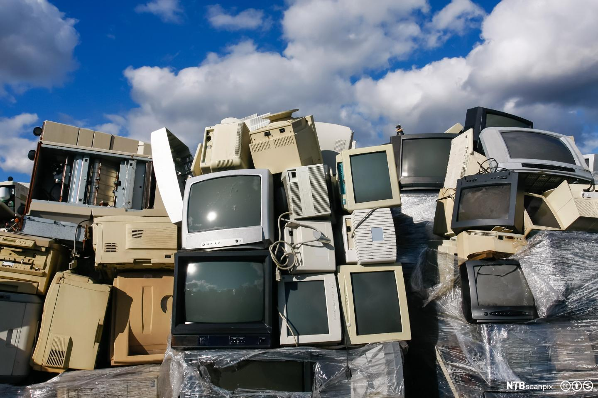

Med Grøn IT mener at

DATAUTSTYR OG MILJØ
- Bruke utsyr som bruker lite straum
- Slå av utsyr når det ikkje er i bruk
- Lat ikkje PC’ar stå pålogga heile dagen
Resirkulering
- Avfallsforskrifta
- Datautstyr inneheld tungmetall
- Bør ikkje havne i naturen
- Lever til gjenvinning-EL butikkar og miljøstasjonar
Virtualisering
- Kjøre fleire serverar virtuelt
- Mindre hardware
- Resirkuleringsprogram
Tilbake til hovedsider